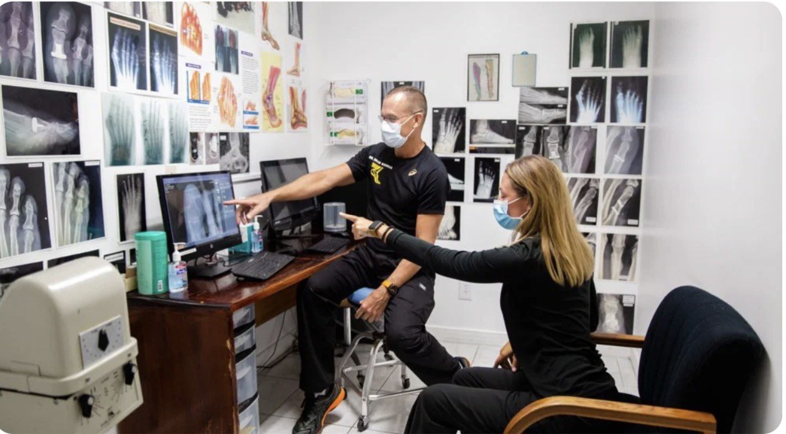
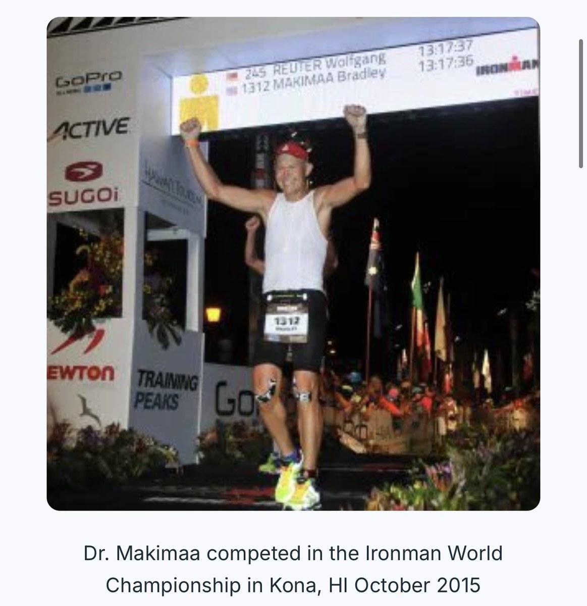

Sports Medicine
Injuries, biomechanics, training-related pain, and prevention for active patients.
Southernmost
Foot & Ankle Specialists
Key West • Homestead • Coral Gables
DPM, FACFAS
Foot & Ankle Surgeon specializing in sports medicine, advanced surgical care, diabetic limb preservation, and wound care.
🏆 Ironman World Championship Athlete • Kona, HI

About Dr. Makimaa
Dr. Bradley Makimaa is a board-certified foot and ankle surgeon and President of Southernmost Foot & Ankle Specialists. His practice focuses on sports medicine, foot and ankle surgery, diabetic limb salvage, and comprehensive wound care.
As an athlete and Ironman World Championship competitor, Dr. Makimaa brings a performance-minded approach to helping patients return to the life they love.

Specialties
Injuries, biomechanics, training-related pain, and prevention for active patients.
Advanced surgical care for complex foot and ankle conditions.
Comprehensive care focused on wound healing and limb preservation.
Urgent and ongoing treatment for foot, leg, and ankle wounds.
Athlete Perspective
Dr. Makimaa competed in the Ironman World Championship in Kona, HI in October 2015. His athletic background supports his strong focus on sports medicine, injury prevention, and functional recovery.

Key West Office
2780-2 N Roosevelt Blvd
Key West, FL 33040
Walk-ins welcome • Foot + ankle urgent care • Sports medicine & wound care

Practice
Southernmost Foot & Ankle Specialists offers urgent foot and ankle care, digital X-rays, laser treatment, sports medicine, surgical care, diabetic foot care, custom orthotics, and wound care.